分析のためにデータベースからデータをインポートする
概要
 |
このチュートリアルで使用するデータベースはMicrosoft Azure上に設定されています。 |
このチュートリアルでは、SQLエディタを使用してデータベースから Origin ワークシートにデータをインポートする方法を示します。次に、フィルタ、統計など、データに対していくつかの操作を実行して、グラフ作成に必要なデータを取得します。
手順はOrigin 2023bに基づいています。
学習する項目
このチュートリアルでは、以下の項目について解説します。
- SQLエディタを使用して、同じデータベースの2つのSQLクエリをワークブックデータの2つのシートにインポート
- ワークシートのデータにデータフィルタを適用
- 列の統計を実行
- 棒グラフなどのグラフを作成
手順
データベースからデータをインポートする
- 新しいプロジェクトを開始します。メニューからデータ：データベースに接続：新規作成...をクリックするか、データベースアクセスツールバーのSQLエディタを開くボタンをクリックします。

- 接続文字列ラジオボタンを選択してOKをクリックします。下記の接続文字列を貼り付けます。
Driver={SQL Server}; Server=olab.DATABASE.windows.net; Port=1433;
DATABASE=sample1; Uid=Olabts; Pwd=Origin@2024;
ODBC Drive 18 for SQL Serverを使用している場合は、
Driver={ODBC Driver 18 FOR SQL Server}; Server=olab.DATABASE.windows.net; Port=1433;
DATABASE=sample1; Uid=Olabts; Pwd=Origin@2024;;
- テストボタンをクリックして、接続が成功したことを確認します。問題なければ、OKをクリックしてデータベースにアクセスします。
- 左側のパネルで、SalesLT.Productノードをダブルクリックします。 右側のパネルにselect
* from SalesLT.Productと表示されます。
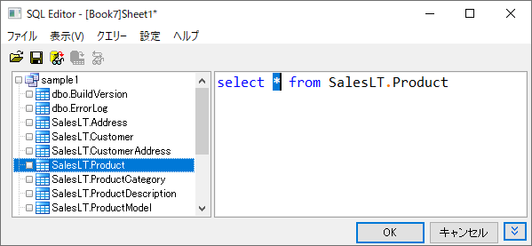
- 結果データをプレビューボタンをクリックして下のパネルでデータを参照します。
- OKボタンをクリックすると、アクティブなワークシートにデータがインポートされます。
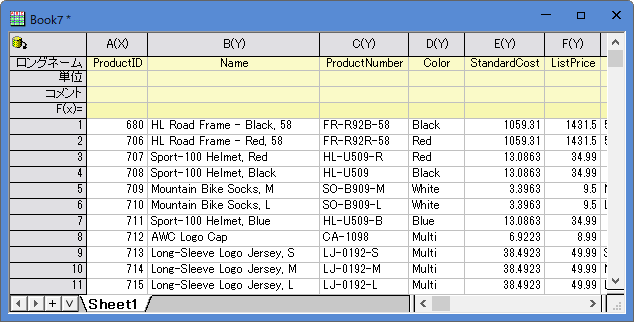
- 同じデータベースから別のSQLクエリに基づいてデータを新しいシートにインポートするには、シートタブを右クリックし、データなしで複製を選択します。
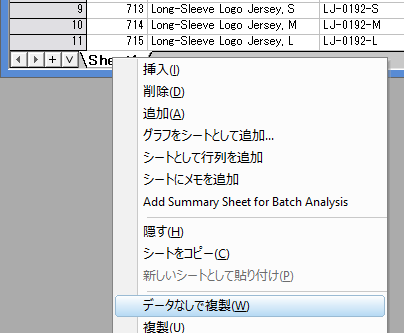
- Sheet2で、
 をクリックしてSQLエディタを選択します。
をクリックしてSQLエディタを選択します。
- メニューからクエリ―：LabTalk...を選択してLabTalkサポート設定ダイアログを開きます。LabTalk置換(%,$)をするのチェックボックスを付けて、以下のスクリプトをテキストボックスに入力します。
int cate=1;
ダイアログは次のようになります。
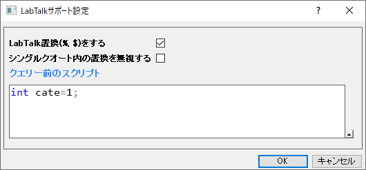
- OK をクリックして、SQLエディタに戻ります。そして下記のSQLスクリプトを右側上のパネルに貼り付けます。このSQLは、データベースの2つの列を照会します。1つは製品のカテゴリ名で、もう1つは親カテゴリ1の各カテゴリのLineTotalforの合計です。
SELECT SalesLT.ProductCategory.Name, SUM(SALEANDPRODUCT.LineTotal) AS LineTotal
FROM
(SELECT SALEINFO.LineTotal, PRODUCTINFO.ProductCategoryID
FROM
(SELECT SalesLT.SalesOrderHeader.OrderDate, SalesLT.SalesOrderDetail.LineTotal, SalesLT.SalesOrderDetail.ProductID
FROM SalesLT.SalesOrderHeader
INNER JOIN SalesLT.SalesOrderDetail
ON SalesLT.SalesOrderHeader.SalesOrderID=SalesLT.SalesOrderDetail.SalesOrderID) AS SALEINFO
INNER JOIN
(SELECT SalesLT.Product.ProductID, SalesLT.Product.ProductCategoryID
FROM SalesLT.Product) AS PRODUCTINFO
ON SALEINFO.ProductID=PRODUCTINFO.ProductID) AS SALEANDPRODUCT
INNER JOIN SalesLT.ProductCategory
ON SALEANDPRODUCT.ProductCategoryID=SalesLT.ProductCategory.ProductCategoryID
WHERE SalesLT.ProductCategory.ParentProductCategoryID = $(cate)
GROUP BY SalesLT.ProductCategory.Name
ORDER BY LineTotal
 ボタンをクリックして、置換された変数を含むSQLクエリスクリプトを表示します。結果データをプレビューボタンをクリックして下のパネルでデータを参照します。
ボタンをクリックして、置換された変数を含むSQLクエリスクリプトを表示します。結果データをプレビューボタンをクリックして下のパネルでデータを参照します。
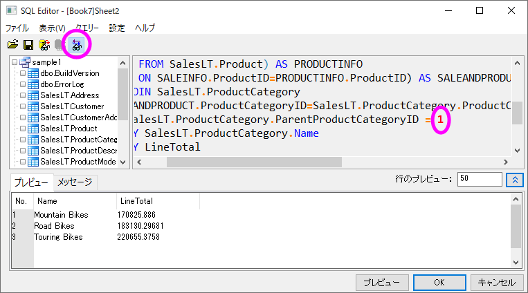
- ダイアログを閉じる前に、メニューからファイル：接続とクエリ―を新規に保存...を選択します。LineTotal_by_parentCategory.ODQという名前で保存します。
- OKボタンをクリックします。クエリ結果がSheet2に表示されます。
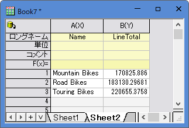
データフィルタと統計
- SUM(), INNER JION, GROUP BYとは別の方法で統計情報を取得します。最初に単純なクエリを実行して、興味のある列をインポートします。その後Originのフィルタや統計などを使って、目的の結果やグラフを得ます。
- 新しいワークブックを作成します。ここではBook2とします。
- メニューからデータ：データベースに接続をクリックしてLineTotal_by_parentCategory.ODQを選択します。
- 右側パネルの内容を下記のクエリで置き換えます。これは内部のみで複数のテーブルを結合し、Category Name、ParentCategoryID、LineTotalの3つの列をクエリします。
SELECT SalesLT.ProductCategory.Name ,SalesLT.ProductCategory.ParentProductCategoryID, SalesLT.SalesOrderDetail.LineTotal
FROM SalesLT.SalesOrderDetail
INNER JOIN SalesLT.Product
ON SalesLT.SalesOrderDetail.productID = SalesLT.Product.ProductID
INNER JOIN SalesLT.ProductCategory
ON SalesLT.Product.ProductCategoryID = SalesLT.ProductCategory.ProductCategoryID
ORDER BY SalesLT.ProductCategory.ProductCategoryID
- 列B（ロングネームはParentProductCategoryID）を選択し、ワークシートデータ操作ツールバーのデータフィルターを追加/削除ボタンをクリックします。
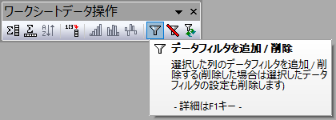
- 列ヘッダの左上ににフィルタアイコンが追加されます。アイコンをクリックして等しい...をコンテキストメニューから選択します。
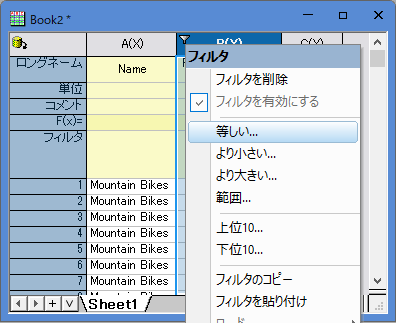
- ダイアログが開きます。値をデフォルトの1のままにしてOKボタンをクリックします。
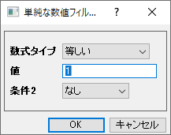
- 列C (LineTotal)を選択し、メニューから統計：記述統計：列の統計を選択して列の統計ダイアログを開きます。
- ダイアログで、グループを列Aに設定します。右向き三角のボタンをクリックして右側のリストから列Aを選択できます。
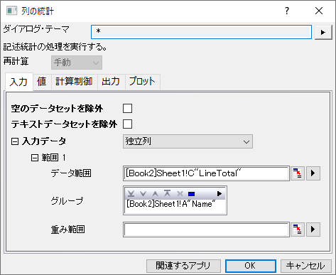
- プロットタブを開いてボックスチャートをチェックします。
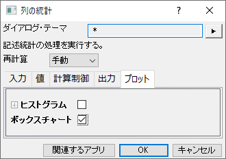
- OKボタンをクリックすると、結果が表示されます。
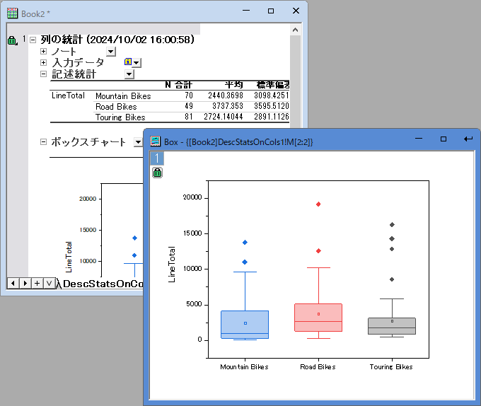
- フィルタ条件の変更や、更新された統計情報の取得は非常に簡単です。Sheet1に戻ります。=1をダブルクリックして=2に変更します。
- DescStatsOnCol1シートを開きます。再計算アイコンが黄色に変わり、入力データが変更されたことを示します。これをクリックして再計算を選択します。これで、parentCategoryID=2のすべての製品のLineTotalが表示されます。
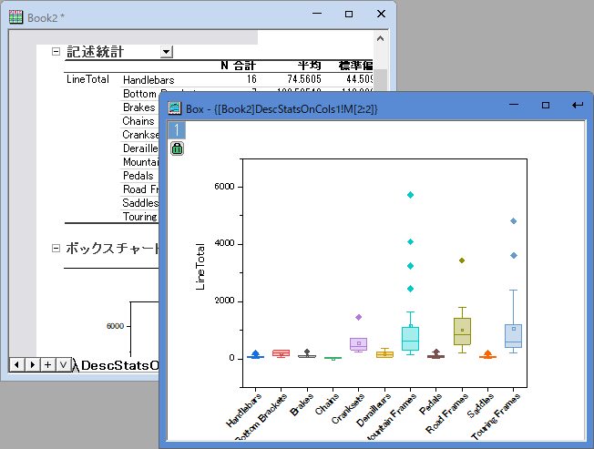
 |
再計算アイコンをクリックして、再計算モードを自動に設定します。これにより、元のデータが変更されたり、フィルタが変更されたりすると、統計解析結果は自動的に更新されます。
|
レーダーチャート
- 列の統計ツールはフラットな結果シートも生成し、これを使ってさらなる分析やグラフ化を行うことができます。
- DescStatsQuantities1シートを開きます。
- 列F（合計）を選択し、メニューから作図：プロット：特殊グラフ：レーダーを選択してレーダーチャートを作成します。
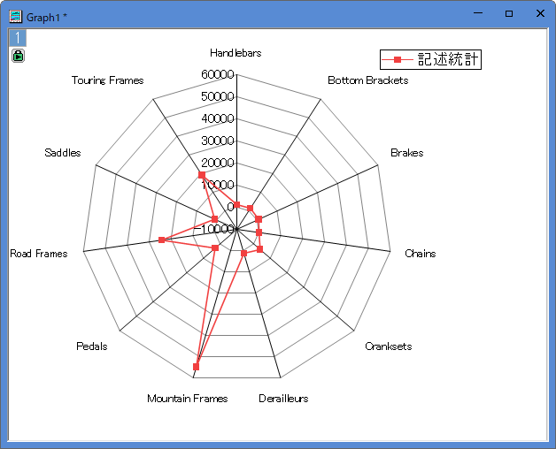
- DescStatsQuantities1シートに戻り、列B (Name) にフィルタを追加し、Mountain
Frames、Road Frames、Touring Framesを除外します。軸を再スケールして、LineTotal値の合計が小さい製品の詳細を表示します。
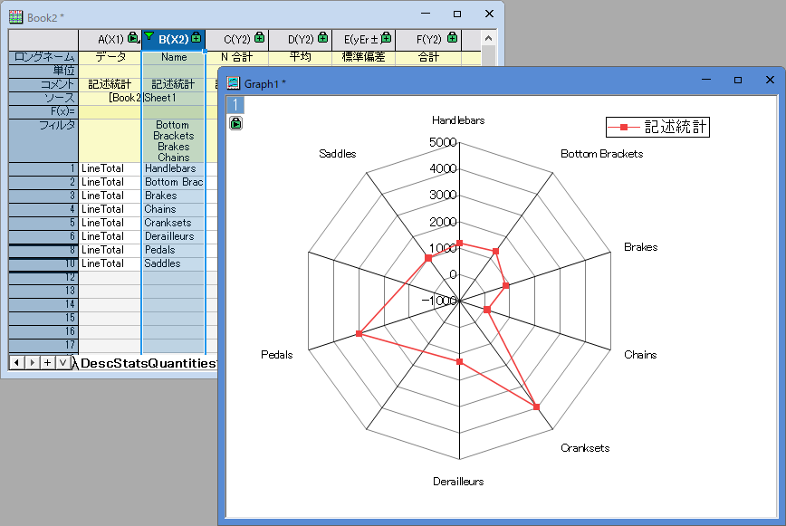